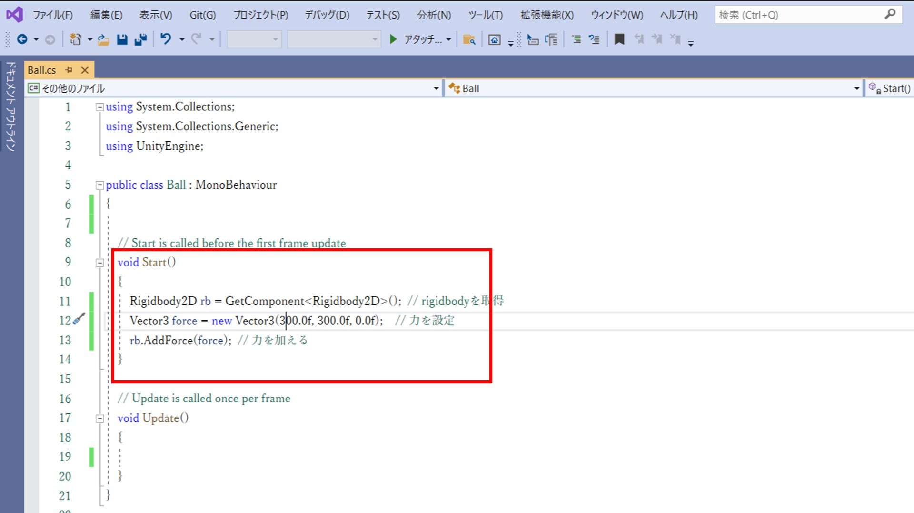
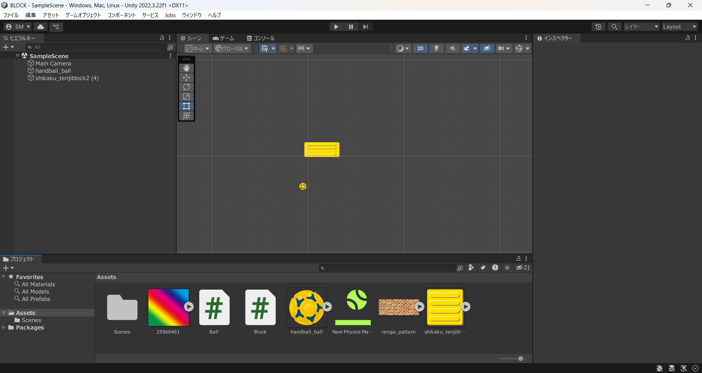
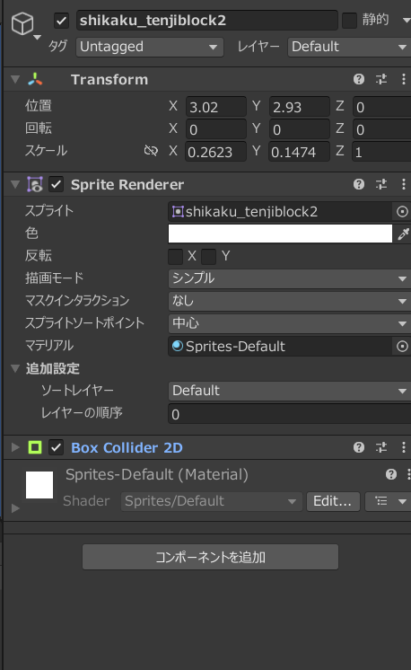
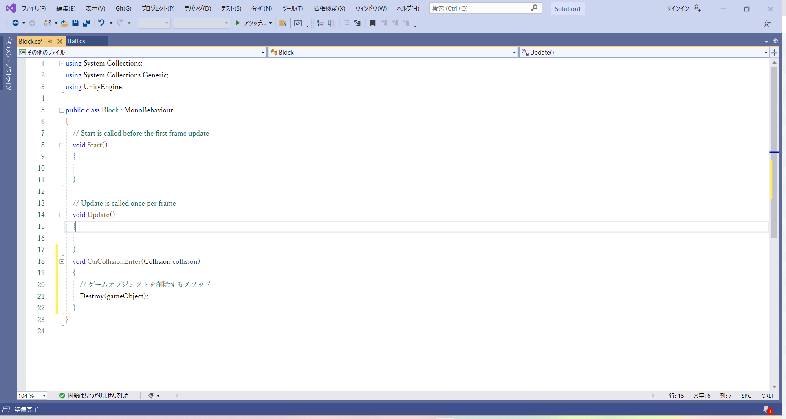
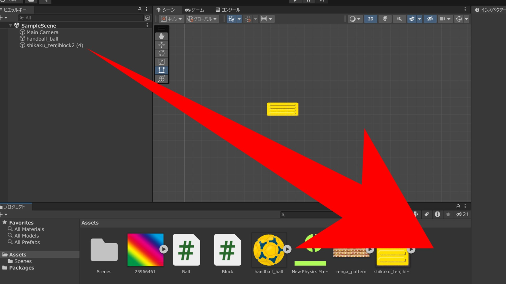
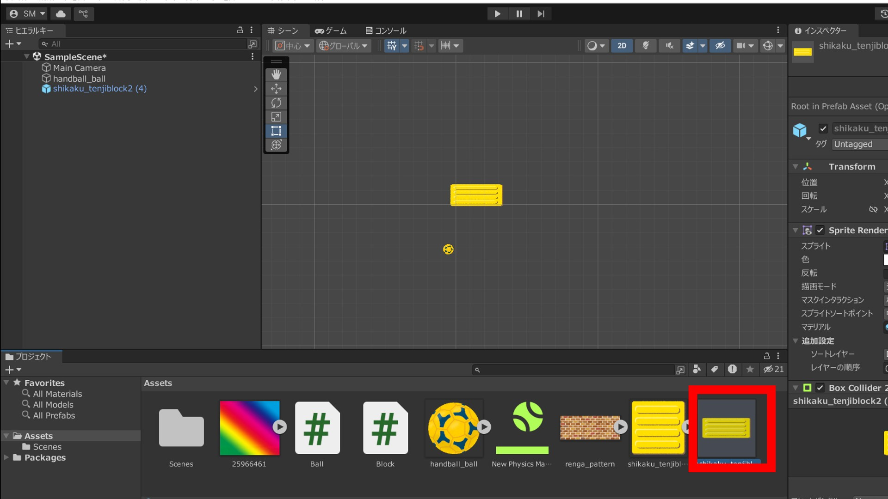
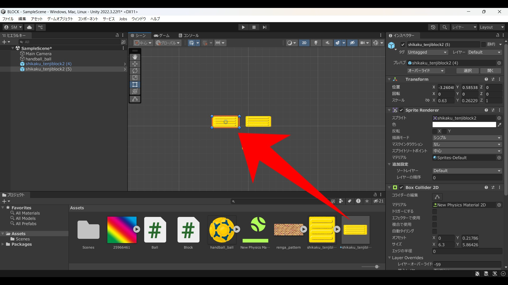

さて、前回ボールに当たり判定まではつけたわけですが...動きがないとさみしいですよね。
というわけで、ボールを動かすScriptを書いて、動けるようにしてやりましょう。
というわけで、AssetsにC#ファイルを作ってください。名前はBallControllerとかがいいかな。
今回作るプログラムは、ゲームが始まった瞬間ボールに力を加えて動かすってやつです。
最初に力を加えるってことは....そう、Startに書いてやればいいんです。
というわけでボールに力を加える文がこちら。

これでUnityHubに戻って再生ボタンを押すと...
ボールが飛んでいきました。この世界は壁がないのであのボールはどこまでも飛んでいくことでしょう。
動いたのが確認出来たら、いったんボールは完了です。停止ボタンを押して次の作業に進みましょう。
ブロックくずしで必要なものNo.1ってなーんだ！
答えはもちろん崩す用のブロック！
というわけで、今度は崩されるブロックを作ってあげましょう。
ボールを作った時と同じように、Sceneビューになっていることを確認し、
Assetsのブロック用の画像をドラッグ＆ドロップでおいてあげましょう。

できたGameObjectの名前をまた変更してあげましょう。
続いて、ブロック用の当たり判定をつけてあげましょう。
これまたボールにつけたときと同じように、Add Componentボタン、Phisycs2Dで、今度はsquareのColiderをつけてあげましょう。

これでブロックの当たり判定ができました。今度はボールが当たった時に消えるようにしてあげましょう。
ブロックのScriptを書いてあげましょう。またAssetsにC#ファイルを作成してください。
今回書くプログラムは、「ゲーム中に何かが当たった時、自分自身を削除する」です。
今回は...void startの中にもupdateの中にも書きません。
当たったときの処理はupdateとかの外に書いておいても、普通に扱うことができます。
実際に書いてみたものがこちらになります。

void OnCollisionEnter(Collision collision)っていうのは、さっき付けたColliderになんか当たった時に行う処理です。
保存してUnityに戻りましょう。
今作ったScriptをブロックにアタッチしたら、ブロックをいい感じにボールが飛んでいく先に置いて、再生してみてください。
消えたらプログラム面は完成です。
ブロック完成したのはいいんですけど、一個しかないですね。これだとさすがにブロック崩しとは言えません。
というわけで、いっぱい作れるようにしましょう。このブロックをPrefabにしていきます。
といってもそんなに難しくはないです。Inspectorにさっき作ったブロックありますよね。
それをドラッグ&ドロップでAssetsの所に持って行ってあげてください。すると...

こんな感じで追加されます。これがprefabです。これでいっぱい複製できるようになりました。

試しに今作ったPrefabを、Sceneビューにもっていってください。これだけで配置ができます。
これをボールの行く先においても、もちろんぶつかれば消えます。

これでいつでも好きなだけブロックを出せますね！